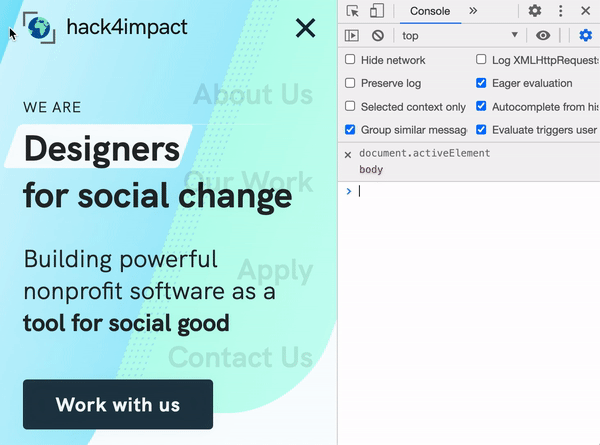
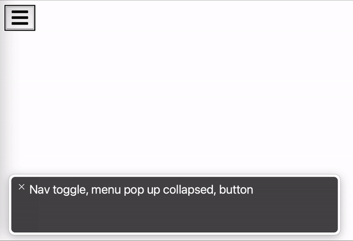
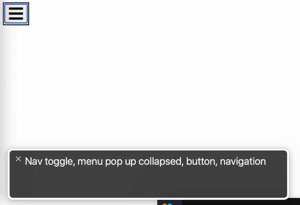

Sexy, accessible show-hide animations in any web framework
7 minute read•Last updated
This entry comes from my web wizardry newsletter, where I explore evergreen solutions to common web dev problems (no matter your favorite framework). If you like what you see, go sign up for free 🪄
Using JS to show and hide something is a web dev rite of passage. Heck, it's the first demo that comes to mind when you think about "state management" (just behind building a counter 😆).
But when you do the classic "hide whenever X variable is false," there's some accessibility concerns you might be forgetting:
- can keyboard users still access that hidden element?
- do screen readers actually know what your button is trying to show and hide?
Don't worry, I have the answers for you! Let's explore a universal solution you can bring to React, Svelte, Vue, etc, along with some debugging tips using a real screen reader 🚀
Starting with a naive solution
Okay, wait, why isn't this post a 2 minute read? I just whipped up this fade transition in a CodePen and it works great!
See the Pen by Benjamin Holmes (@bholmesdev) on CodePen.
If you don't recognize this meme, go culture yourself
I'll admit that a simple opacity shift works pretty well for non-interactable elements like this img. But what if you're showing and hiding clickable elements, like a navigation bar of links?
This can spell problems for those using keyboard navigation or screenreaders. It's (embarrassingly) a problem across some of my own sites that I'm working to fix, but it can be tricky to debug.
Here's an example of hitting the tab key through our Hack4Impact.org site. I've adjusted the dropdown overlay to opacity: 0.1 to show which items are focused, but you can expect the same behavior for opacity: 0:

Follow either the focus ring around the elements, or the activeElement query in the console view (which prints the element being focused)
Uh oh, I'm still able to focus and select these links! What's more, our opacity solution poses a problem for visually impaired users, since they won't know that our visual opacity shift really means showing and hiding a dropdown.
What we really want is the best of all worlds:
- A nifty fade in-and-out animation for sighted users
- The ability to focus interactable links and buttons only when the element is revealed
- A callout for screenreaders whenever we show and hide something
⌨️ Let's accommodate keyboard users
Note: This section only applies when showing / hiding interactable elements like a list of links.
Focusing on that tab key first, we need to find a way to make sure that a not-so-visible element can't be accessed at all.
You might remember a nifty property for this already: display: none. This makes element nonexistent in the document, right?
Well it's worth a shot! Let's toggle to display: none when our element is hidden, and add display alongside opacity in our list of transitions.
We'll be using this basic navigation dropdown as fuel for the rest of our code examples. Nothing fancy on the JS + HTML sides! The important piece are those .dropdown and .dropdown.expanded selectors in our CSS. That's where we toggle between our display states like so:
.dropdown {
opacity: 0;
display: none;
}
.dropdown.expanded {
opacity: 1;
/* since we're using flexbox in our dropdown */
display: flex;
/* to (hopefully) fade from expanded to collapsed in 0.2 seconds */
transition: opacity 0.2s, display: 0.2s;
}
Full example:
See the Pen by Benjamin Holmes (@bholmesdev) on CodePen.
But wait, where's our fade transition? Sorry to say this is the big limitation of the display property: it cannot be used in CSS transitions ( full list of animatable CSS properties here) This means, when we toggle off our expanded class, it immediately switches to display: none (ignoring our 0.2s transition) before our opacity has time to sexily fade out 😥
What we need is a way to toggle off display only after our element fades out of view. And no, we can't use keyframes to set up this sequence (here's the code you were probably about the try 😉). But fear not! There's a neat property called visibility that can do exactly what we want. Just hot swap display: none for visibility: hidden and update the transition:
See the Pen by Benjamin Holmes (@bholmesdev) on CodePen.
And BAM! Our fade animation remains in-tact, but we've successfully hidden our element from keyboard-ists 👍
You can click on that CodePen preview above and start hitting tab to test our solution. Your focus should immediately jump from the hamburger button to the CodePen zoom controls, instead of trying to focus those invisible links. And once you focus the button, hit space, and start tabing through, those links become selectable.
💡 Note: There is 1 subtle difference between display: none and visibility: hidden. When using the former, an element gets completely removed from the document, so any elements next to it will shift to take up the space it left behind. By contrast, visibility: hidden just hides the element visually, while leaving the gap for where it used to sit. This prevents your website layout from shifting around when you toggle elements on and off.
👁 Let's accommodate screen readers
Okay, so we know what our website looks like... but what does it sound like? 🤔
Well, I'd recommend breaking out a screen reader for this next part! You can reach for the VoiceOver tool if you're running MacOS, but there's also a screen reader for Chrome you can try on any computer.
If you're interested, you can follow along with this video walkthrough to see the VoiceOver tool in action 👇
Communicating toggle states with aria-expanded
Our navigation toggle button is the first issue to address. If you try expanding and collapsing our menu as-is, the screenreader won't read anything new to the user. This is because, well, it's a plain old button at the moment. We need to tell our reader that it's actually an on-off toggle.
We can pull this off by adding an aria-expanded attribute to our button. This boolean should call out whether our menu is in the "expanded" or "collapsed" state. Just set the initial state in our HTML:
<!-- collapsed by default -->
<button aria-expanded="false" aria-label="Nav toggle" class="toggle-dropdown">
And keep that value up-to-date wherever we're tracking button clicks. Here's a basic version for plain-JS:
const toggle = document.querySelector(".toggle-dropdown");
toggle.addEventListener("click", () => {
// toggle our CSS class
dropdown.classList.toggle("expanded");
// and if our "expanded" class is turned on...
if (dropdown.classList.contains("expanded")) {
// set aria-expanded to true
toggle.setAttribute("aria-expanded", "true");
} else {
// otherwise it's false
toggle.setAttribute("aria-expanded", "false");
}
});
See the Pen by Benjamin Holmes (@bholmesdev) on CodePen.

VoiceOver output as we toggle our button. Notice we get a new announcement for every click saying either "expanded" or "collapsed"
You can also add the attribute aria-haspopup="true" to your button. This will just added the word "popup" to the screenreader output to make behavior just a bit more understandable. Optional, but recommended!
Focusing our dropdown on expanded
Note: This should only be used when showing / hiding interactable elements. If you're just revealing images or paragraphs, the aria-expanded piece should be sufficient!
So now we're telling the user that they're expanding and collapsing something. But what is this something their actually toggling?
Sadly, there's no straightforward way to tell the user "you just expanded my fancy dropdown!" There is an aria-controls attribute you can try, but it's only supported by the premium JAWS screen reader (which many users don't have access to).
So, we're going to offer the next best thing: just focus the first element in our dropdown to read out the contents immediately. This means shifting keyboard focus (yes, visually impaired users tend to navigate navigate using a keyboard) from our menu button to our first link whenever aria-expanded="true". Of course, this only applies when revealing interactable elements like buttons or links, so it should
Should be simple enough! Just add a call to focus() whenever we expand the element, right?
toggle.addEventListener("click", () => {
if (dropdown.classList.contains("expanded")) {
// use firstElementChild to grab the first link
dropdown.firstElementChild.focus()
toggle.setAttribute("aria-expanded", "true");
} else {
...
});
Well, this doesn't work super reliably when we have our fancy CSS transition. There's a chance we'll try to focus the first link while visibility is still hidden, which prevents our focus() call from going through 😕
Luckily, there's an easy way to "wait" on our CSS transition to finish before setting focus. We just need to listen for the transitionend event on our dropdown like so:
dropdown.addEventListener('transitionend', () => {
if (dropdown.classList.contains("expanded")) {
// instead of calling focus() in our 'click' listener,
// we'll call it from here!
dropdown.firstElementChild.focus()
}
})
With this in place, we should get reliable link focusing with a matching screen reader output 👍

Finished product
See the Pen by Benjamin Holmes (@bholmesdev) on CodePen.
⚙️ Applying this to your favorite framework
We've covered a lot of ground using plain JS, but it's quick-and-easy to apply to any component framework!
We just need a couple pieces:
- an
expandedstate variable to keep track of showing / hiding - a callback to
focus()our first dropdown element ontransitionend. For most frameworks, we can just attach a callback function to an element'sonTransitionEndattribute.
A simple React solution
import { useState } from "react";
export default function DropdownExample() {
const [expanded, setExpanded] = useState(false);
const focusFirstDropdownLink = ({ target }) => {
// if we apply this function to our dropdown,
// the "target" should be a reference to the dropdown itself!
target.firstElementChild.focus();
};
return (
<>
<nav>
<button
className="toggle-dropdown"
aria-expanded={expanded}
aria-haspopup="true"
aria-label="Nav toggle"
onClick={() => setExpanded(!expanded)}
>
...
</button>
</nav>
<div
{/*toggle our "expanded" CSS class*/}
className={expanded ? "dropdown expanded" : "dropdown"}
{/*trigger our focus() once the dropdown's fade effect finishes*/}
onTransitionEnd={focusFirstDropdownLink}
>
<a href="/">Home</a>
<a href="/about">About</a>
<a href="/projects">Projects</a>
<a href="/contact">Contact</a>
</div>
</>
);
}
Pretty straightforward rewrite! The ability to bind our focus() function to the onTransitionEnd listener saves us a lot of work. We don't even need a useRef to grab the element, in fact.
Here's a working sandbox demo for you to try 🚀
Svelte example
This should be equally trivial in Svelte:
<script>
let expanded = false;
const focusFirstDropdownLink = ({ target }) => {
// again, "target" should be a reference to our dropdown
target.firstElementChild.focus()
}
</script>
<style>
...
</style>
<nav>
<button class="toggle-dropdown" aria-expanded={expanded} aria-haspopup="true" aria-label="Nav toggle" on:click={() => expanded = !expanded}>
<svg viewBox="0 0 448 512" width="100" title="bars">
<path d="M16 132h416c8.837 0 16-7.163 16-16V76c0-8.837-7.163-16-16-16H16C7.163 60 0 67.163 0 76v40c0 8.837 7.163 16 16 16zm0 160h416c8.837 0 16-7.163 16-16v-40c0-8.837-7.163-16-16-16H16c-8.837 0-16 7.163-16 16v40c0 8.837 7.163 16 16 16zm0 160h416c8.837 0 16-7.163 16-16v-40c0-8.837-7.163-16-16-16H16c-8.837 0-16 7.163-16 16v40c0 8.837 7.163 16 16 16z" />
</svg>
</button>
</nav>
<!--Note we can use class:expanded to bind our "expanded" CSS class to the "expanded" state variable-->
<div class="dropdown" class:expanded on:transitionend={focusFirstDropdownLink}>
<a href="/">Home</a>
<a href="/about">About</a>
<a href="/projects">Projects</a>
<a href="/contact">Contact</a>
</div>
Here's another working sandbox demo for you to try 🚀